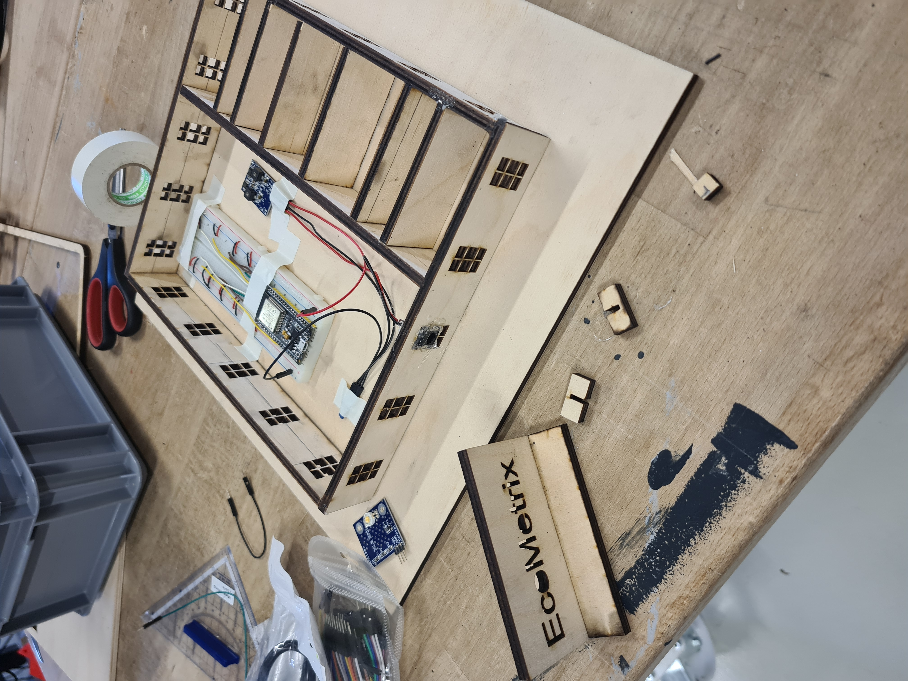

Over the past semesters, I had the opportunity to participate in two very different hackathons, both of which taught me a lot about teamwork, creativity, and problem-solving under time pressure.

In the heat of the moment
At the Servus Zukunft Hackathon in Benediktbeuern, we developed the concept for an autonomous hotel room that could clean itself and function almost entirely independently. The project explored how technology and automation could shape the future of hospitality while improving efficiency and user comfort. Working on this idea showed me how quickly concepts can evolve when people with different backgrounds and skills collaborate closely.
Later, I also participated in the NOI Hackathon at the NOI Techpark in Bolzano, where our team won the Maker Space Award. During this hackathon, we created a system designed to help companies optimize their energy consumption and reduce costs. By collecting real-time data from sensors, the system could analyze electricity, water, and gas usage and provide actionable insights and personalized recommendations to improve energy efficiency and support sustainability goals.
What I learned most from both hackathons is how important collaboration really is. Strong ideas rarely emerge alone they develop through discussions, experimentation, and combining different perspectives within a team. Especially in the fast-paced environment of a hackathon, communication and teamwork become just as important as the technical solution itself.
Both experiences were incredibly inspiring because they combined innovation, design, and technology with real-world challenges and showed how much can be achieved in a short amount of time when people work together creatively.